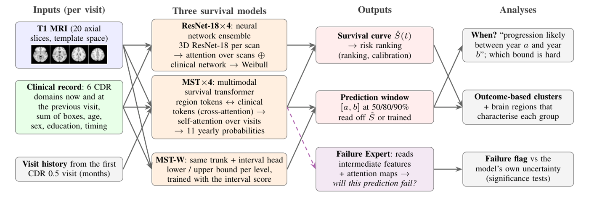
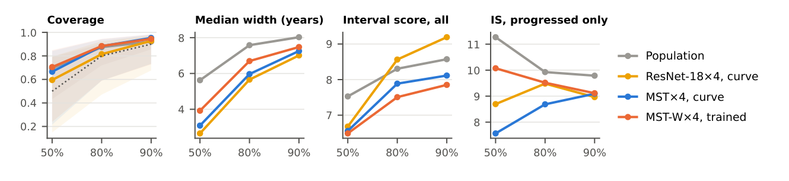
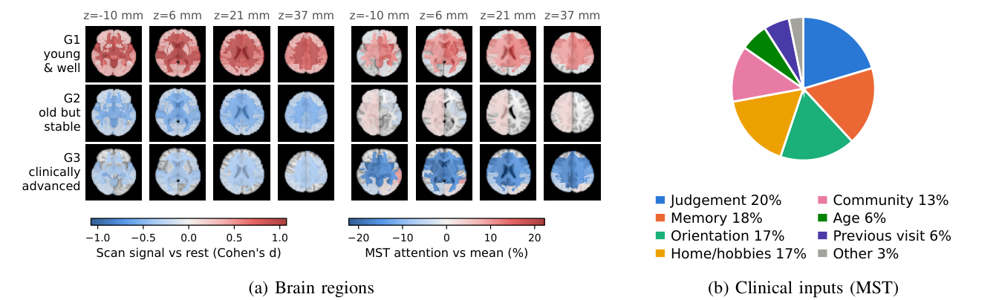

Predicting when mild cognitive impairment may become dementia, as a window of years
When a person has Mild Cognitive Impairment, doctors would like to know when, if ever, it will turn into dementia. That time is hard to predict, so in this study we asked a model for a window of years instead of a single date. We tested three models on brain scans and clinical records from 941 participants of a large research study, the Alzheimer's Disease Neuroimaging Initiative (ADNI).
Why one date does not work
Doctors stage the disease with the Clinical Dementia Rating, or CDR. Mild Cognitive Impairment corresponds to CDR 0.5, and dementia to CDR 1 or higher. The time we want to predict is how long a patient stays at 0.5.
Three things make that time hard to pin down. Patients are only seen at clinic visits, a median of 11.7 months apart, so the true moment of change falls somewhere between two visits. Experts often disagree on the rating. And some patients stop coming. A single predicted date pretends to a precision the data cannot give.
Three models and a window
Each model reads a patient's T1 MRI brain scan, their clinical record and the history of visits. It outputs a survival curve: for every future year, the chance that the patient is still at CDR 0.5. Reading the curve at two points gives a window. For an 80% window, there is a 10% chance that progression comes before the window and a 10% chance that it comes after.

The first model, ResNet-18×4, is an ensemble of four image networks that read up to six scans per patient and combine them with the clinical record. The second, MST×4, is our multimodal survival transformer. It lets regions of the brain scan and items of the clinical record look at each other, using attention, and then links the visits of one patient over time. The third, MST-W, has an extra output that learns the window directly, trained to minimise the interval score: the window width plus a penalty for each year by which the true time falls outside it.
We trained on scans and records of 941 ADNI participants who were at CDR 0.5. Of them, 293 (31%) progressed to CDR 1 or higher. The median follow-up was 3 years. The scans of 1,018 other people were used only to pre-train the image part.
What we found
For ranking, the three models are equal. Ranking is measured by the concordance index: given two patients, how often the model gives the higher risk to the one who progresses first (0.5 is a coin toss). ResNet-18×4 and MST×4 both reached 0.813, and the MST-W curve 0.812. A model using the clinical data alone reached 0.792, a Cox model 0.773 and a random survival forest 0.783. Adding the scan to the clinical data raised the score by 0.021, but this was not significant after correcting for the many comparisons we made.
The windows are where the models differ. Both kinds reached their target coverage at 80% and 90%, and covered more than they promised at 50%. The directly trained windows were wider, 6.7 against 6.0 years at 80%. Over all patients they won the interval score, 7.51 against 7.89 for the curve (lower is better). For patients who actually progressed, the order flipped: 8.69 for the MST curve, 9.52 for the trained window.

The trained window gets its edge from patients who never progressed during follow-up: it pushes the upper bound beyond the last visit, which cannot be checked. The lower bound is the hard part. Among patients who progressed, 27% did so before the lower bound of the 80% window.
We also split the patients into groups. Groups built only from baseline information separated risk: 19%, 42% and 55% of their members progressed. Windows helped most in the groups where progression was common. Brain maps of the descriptive groups agree with the clinical picture. The clinically advanced group had the lowest scan signal in the hippocampi and the temporal poles, regions known to be affected in Alzheimer's disease.

Finally, we trained a second network, the Expert, to predict when the first model will fail. It added little. For window misses the model's own uncertainty points the wrong way, with an area under the curve of 0.40, and 0.60 once flipped. Confident patients are the ones whose windows miss.
What it does not do
The study uses ADNI only, a curated research cohort, and we have no test on an outside cohort. CDR 0.5 also includes very mild dementia. The clinical inputs include the CDR domains from which the target rating is built, so part of the signal is circular. The attention maps show where the network looks, not what causes its predictions. Windows are least reliable for patients with short follow-up. This is a research result, not a clinical tool.
Next, we plan to give each bound its own training objective, and to test the system on an external cohort, with ablations and a conformal baseline.
Acknowledgements
David Calhas and Swarnendu Ghosh were supported by the EU's HE MSCA COFUND Programme, grant agreement No. 101081355 (SMASH), and by the Republic of Slovenia. David Calhas, Vida Groznik, Dejan Georgiev and Aleksander Sadikov were supported by ARIS project P2-0209. Swarnendu Ghosh and Branko Šter were supported by ARIS project P2-0241. Views and opinions expressed are those of the authors only and do not necessarily reflect those of the EU or ERA. Neither the EU nor the granting authority can be held responsible for them. Data used in this work were obtained from the Alzheimer's Disease Neuroimaging Initiative (ADNI) database (adni.loni.usc.edu).
How to cite the paper
David Calhas, Swarnendu Ghosh, Branko Šter, Vida Groznik, Dejan Georgiev, Aleksander Sadikov (2026). Multimodal Survival Transformer for Progression Window Estimation of Time to Dementia. 2nd International Conference on Health Medical Systems and Services (HMSS 2026), IEEE Xplore, in press.